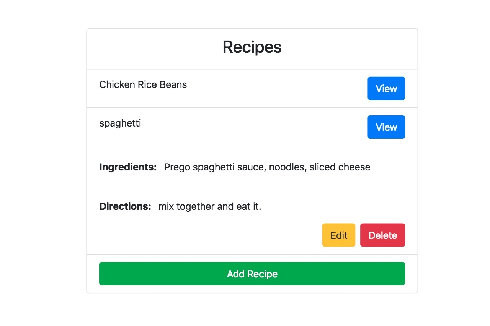

My Work
Recipe Web Application
This is a full stack application using Node.js, MongoDB, handlebars.js templating engine, and Bootstrap. I got the idea from a tutorial I was following online, but the original project was done with node.js, PostgreSQL, and the dust.js templating engine. I wanted to see if I could implement this same web application using the technologies above. Success!! The recipe app has full CRUD functionality (create, update, and delete). Full code can be seen in the github link.
Accordion Style Recipe App!
